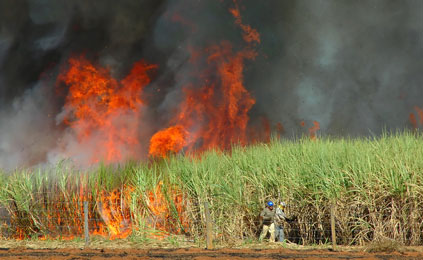

Queima da palha da Cana-de-açúcar
A cana-de-açúcar é uma espécie de taquara, um tronco cheio de sumo doce, do qual se extrai suco, melado, depois álcool. O bagaço é utilizado como forragem, serve de alimento aos bovinos e é também fertilizante. As folhas que entornam o tronco sumoso corta igual navalha. Um corte bem dolorido. As plantações de cana-de-açúcar também servem de habitat para cobras, tatus e outros pequenos animais.
A queimada facilita a colheita da cana, mas fere e mata os animais, além de poluir o meio ambiente, trazendo doenças para a população, principalmente hipertensão e asma. Em casos mais raros, há também registros de trabalhadores que morrem intoxicados e queimados.
O incentivo ao plantio de cana de açúcar iniciou em 1975, através do lançamento do programa Proálcool. O Brasil é hoje o maior produtor de cana-de-açúcar do mundo. A área cultivada atinge aproximadamente 5,5 milhões de hectares. Com a possibilidade de se usar a cana-de-açúcar como forrageira ou no preparo da Sacharina, houve grande interesse dos produtores pelo seu plantio. Entretanto,uma série de problemas ligados à saúde humana e ao meio ambiente, envolvendo a queima das folhas antes da colheita, põe em xeque a questão desse bio combustível e alimento.
De acordo com algumas pesquisas ,o gerente da Cetesb José Jorge Guimarães explica que um dos maiores problemas ambientais enfrentados pela Companhia, na nossa região, é a queimada da palha da cana-de-açúcar. “Para se ter uma noção da dimensão disso, segundo um levantamento de junho deste ano, há um total de 335 mil hectares de cana plantados na região, incluindo a de rebrota. Deste total, 229 mil são áreas mecanizáveis, embora não estejam totalmente mecanizadas, e 11 mil hectares são áreas de restrição, onde a queimada é proibida”, diz. Em relação a esse tipo de poluição, Guimarães destaca a importância da legislação ambiental promulgada em março de 2003, que dispõe sobre a eliminação gradativa da queima da palha de cana-de-açúcar. “Essa supressão se iniciou no ano de 2002 e irá terminar em 2031, e posso dizer que houve um avanço significativo no controle da queima da palha também em função da mecanização, embora esse tipo de poluição ainda seja um problema prioritário da agência”, informa. Em 2001, a Cetesb aplicou 14 multas na região, arrecadando cerca de R$ 500 mil. Já em 2004, durante a safra atual, foi aplicada uma única pena. “Isso significa que houve uma redução de queimadas nas áreas proibidas. Há, hoje, um cuidado maior das usinas neste sentido. E este resultado se deve às reuniões que a nossa agência faz todos os anos com as empresas”, afirma o engenheiro. Outra questão importante que vem sendo alvo de muito trabalho por parte da Cetesb são as queimadas urbanas. “Este é um problema que vem aumentando muito”, diz Guimarães. A fiscalização dos focos de queimada acontece em parceria com a Prefeitura que, até o mês passado, aplicou 400 multas desde janeiro deste ano. No entanto, mesmo diante desses problemas, a população de Araraquara não deve se preocupar, ainda que eles estejam, atualmente, agravados pela baixa umidade do ar. “Os dados têm se mostrado, na maioria do tempo de amostragem, como bons e, mesmo recentemente, em função da redução do teor de umidade, quando aumentou a quantidade de partículas em suspensão e de partículas inaláveis, a situação não é preocupante”, salienta José Jorge. (VC) Ao tomar como referência os depoimentos obtidos junto aos pesquisadores do Instituto de Química da UNESP, capítulo 4.4, verifica-se que o nível de complexidade que 118 permeia o problema das queimadas de cana na região de Araraquara não é abordado pelos meios de comunicação.